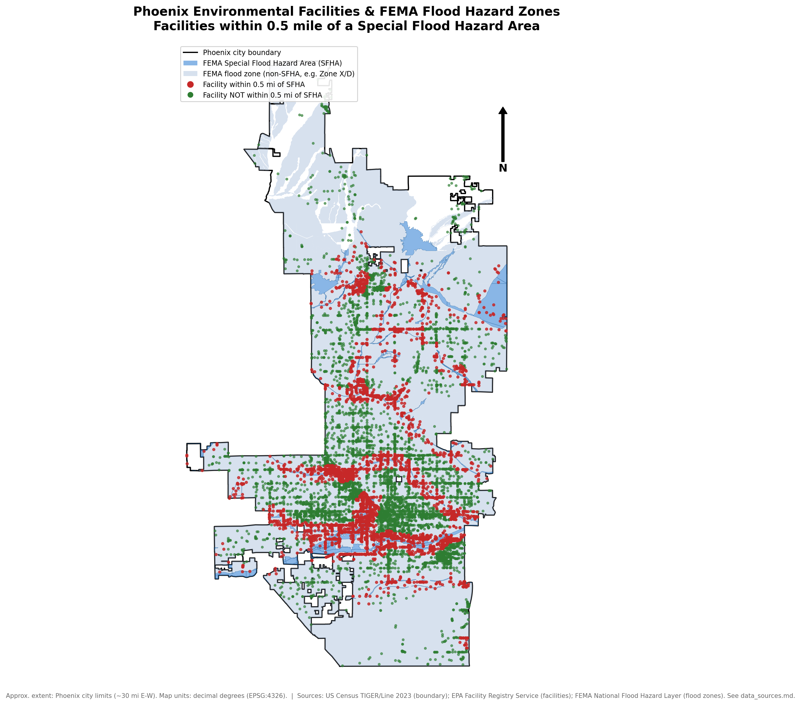

Phoenix Environmental & Flood Risk GIS Analysis
A reproducible geospatial analysis identifying EPA-registered facilities located within 0.5 miles of FEMA Special Flood Hazard Areas across Phoenix, Arizona.

Phoenix, ArizonaKey Results
What the analysis found
Every number below is computed live by analysis.py and written to data/processed/summary_statistics.csv — nothing here is hardcoded or estimated.
Explore
Interactive Map
Phoenix boundary, FEMA flood hazard zones, and every analyzed facility — clustered, color-coded, and clickable.
Zoom, toggle layers, and click facilities to inspect attributes.
Open full-screen mapWhy This Analysis Matters
A screening tool, not a flood model
Flooding can mobilize contaminants stored or handled at industrial and regulated facilities — hazardous waste, wastewater discharge, chemical storage — turning a flood event into a secondary environmental release. This analysis provides a screening-level method to identify facilities that may warrant further flood-risk review, emergency planning, or environmental assessment before a more detailed engineering study. It is intentionally not a hydraulic flood model.
Methodology
How the spatial analysis works
Four steps turn raw facility points and flood polygons into a flagged result set.
Distance-based analysis was performed in a projected coordinate reference system (EPSG:2223, NAD83 / Arizona Central State Plane, US feet) rather than latitude/longitude degrees, so the 0.5-mile buffer represents a true, consistent distance everywhere in the study area.
Reproducibility
One command regenerates everything
Fetch
Census, EPA, and FEMA public data downloaded programmatically.
Clean
Validate coordinates, repair geometries, filter to Phoenix.
Analyze
Reproject, buffer 0.5 mi, and spatially join to FEMA SFHA zones.
Visualize
Static print map and interactive Folium/Leaflet web map.
Report
A two-page PDF technical report generated from the analysis output.
One command regenerates the cleaned layers, analysis outputs, maps, statistics, and technical report.
Static Map & Key Finding
Print-quality output
Legend, north arrow, and data source note included — suitable for a report appendix or print layout.
The largest facility categories are "Other / State-Registered Facility" and "Hazardous Waste (RCRA)" — these two categories also dominate the facilities flagged near an SFHA.
Technical Decisions
Why this holds up under questions
Why a projected CRS for buffering
EPSG:4326 stores coordinates in decimal degrees, not a linear unit — a "0.5" buffer there would mean 0.5 degrees, not 0.5 miles, and would vary by latitude.
Why EPSG:2223
NAD83 / Arizona Central State Plane (US feet) is a projected CRS centered on the Phoenix metro area, giving accurate, consistent distances across the study area.
Why the EPA bulk CSV, not the REST API
The FRS REST API's spatial query rejects any request wide enough to cover Phoenix ("process limit" error). EPA's own documented bulk CSV download was used instead — see data_sources.md.
Every number traces back to a script
Nothing is hardcoded. Every figure on this page and in the PDF report is read from summary_statistics.csv, generated by analysis.py.
Tools & Technologies
Stack
QGIS was used to independently verify the spatial join: Select by Location (facility_buffers intersecting FEMA SFHA polygons) returned 4,195 features — an exact match to the Python analysis output. Full QGIS styling/print-layout practice is still in progress; ArcGIS Online is planned but not started.
Limitations
This is a screening-level proximity analysis. A facility located near a FEMA Special Flood Hazard Area is not necessarily expected to flood. Elevation, drainage infrastructure, levees, site conditions, and hydraulic behavior were not modeled. FEMA flood maps are periodically revised and may not reflect current conditions.
Project Resources
Explore the outputs
Technical Report
Two-page PDF covering goal, methodology, CRS notes, findings, and limitations.
Open PDF →GitHub Source Code
Full reproducible pipeline, cleaned GeoPackage layers, and documented data sources.
View Repository →